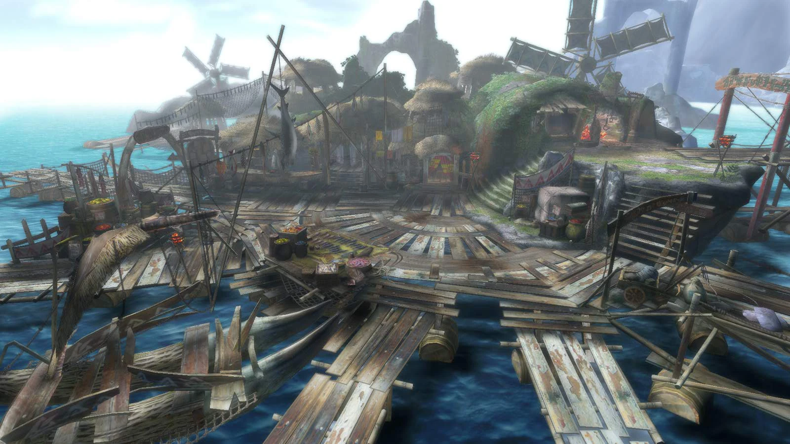
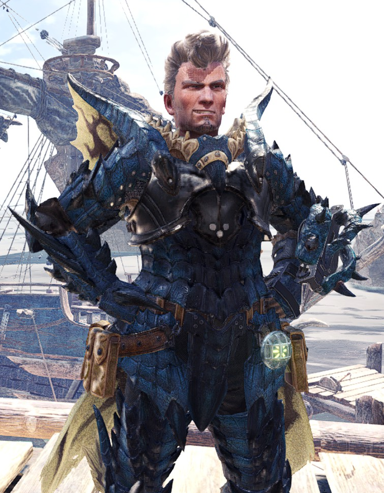
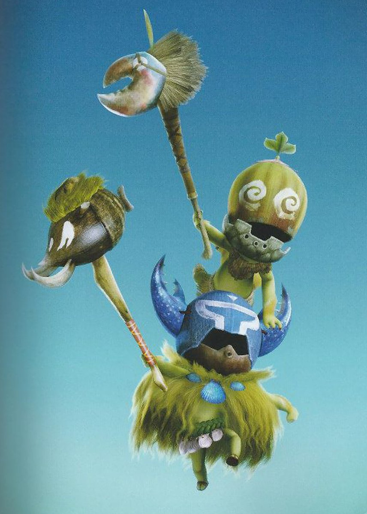
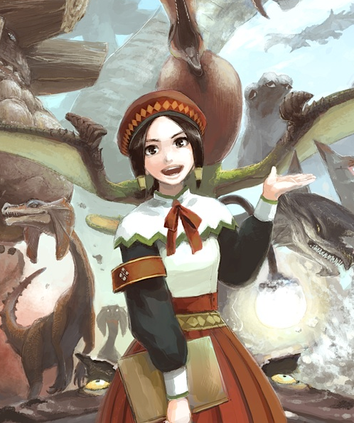
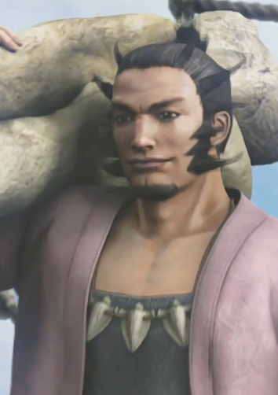
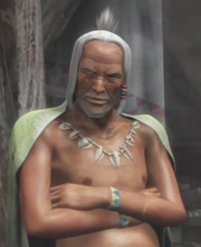
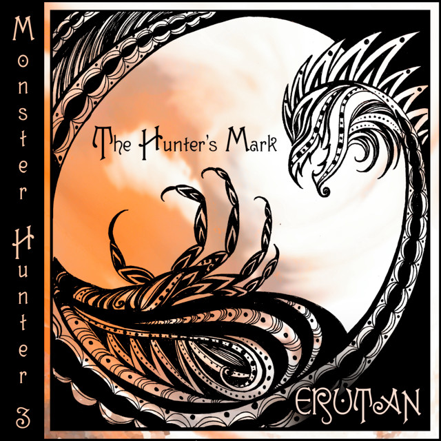

GARRICK STRIKER
Seabreaker
|
|
|
|
|
|
|
|
|
|
|
|
|
|
|
|

Le Monolithe demeure inébranlable face aux vagues.
❖ ----- Armure Principale ----- ❖
|
|
Haume Âme Rathalos |
|---|---|
|
|
Cotte Âme Rathalos |
|
|
Avant-Bras Âme Rathalos |
|
|
Boucle Âme Rathalos |
|
|
Garde-jambes Âme Rathalos |
❖ ----- Apparence physique et personnalité ----- ❖
Vétéran chasseur, Garrick Striker est un vieux de la vieille qui continue à exercer son métier avec entêtement et fierté. Il est grand, large d'épaules et solidement bati. Une vie passée à chasser laisse ses marques sur son corps, Garrick se pleignant souvent de maux de dos. Il est marqué de bien des cicatrices, la plus flagrante étant une ancienne blessure traversant son front et coupant son sourcil gauche. Il a les yeux bleus, perçants. Ses cheveux, autrefois noirs, ont entièrement grisés avec l'âge. Il les coiffe soigneusement en une coupe banane totalement démodée dont les enfants du village Moga se moquent gentiment.
Garrick est une personne soignée, sérieuse, et professionnelle. Il a donné sa vie à son métier, pour le meilleur ou pour le pire. Il aime planifier ses chasses à l'avance et bien que son corps n'est plus ce qu'il était, son expérience reste son atout principal. Son armure plaquée d'écailles de Rathalos Azur est presque aussi ancienne que lui, montrant de clairs signes d'usures et ayant été rafistolée un nombre incalculable de fois. Il continue à la porter malgré tout, ne s'imaginant jamais chasser dans un autre accoutrement.
C'est un homme bourru qui ne fait pas dans l'affection, mais qui a secrètement le cœur tendre
envers les enfants et jeunes recrues.
❖ ----- Biographie ----- ❖
Autrefois chasseur de renom, Garrick Striker a servi la Guilde des Chasseurs avec loyauté pendant des décennies. Des salles sacrées de Dundorma jusqu’aux opérations de secours dans la région de Kamura après la Calamité, il aurait été difficile de trouver un chasseur qui ne prononçait pas son nom avec respect. Pas tout à fait une légende, mais malgré tout reconnu par beaucoup comme un chasseur brillant, estimé aussi bien par les novices que par les vétérans.
Tout cela prit fin lorsqu’un accident de chasse survint. Peu connaissent les détails exacts de ce qui s’est passé, mais Garrick en porta l'entière responsabilité. Son dossier jusque-là irréprochable fut à jamais entaché, et la Guilde le réaffecta à un poste reculé dans l’archipel de Moga. Un exil discret déguisé en retraite honorable.
Résigné à son sort, Garrick embarqua sur un petit navire en direction du village de Moga, une communauté de pêcheurs rattachée à une île isolée. Il s’attendait à y trouver une retraite paisible où finir tranquillement ses vieux jours. Pourtant, avant même qu’il ne pose le pied à terre, un séisme secoua violemment le fragile village portuaire, ébranlant les quais et détruisant plusieurs maisons. Malgré le drame, les habitants l’accueillirent avec chaleur et curiosité. Les enfants le suivaient dans les rues, le chef du village le saluait avec une bonhomie détendue, et même la jeune fille de la Guilde chargée de l’assister le regardait avec des étoiles plein les yeux.
Peu après son arrivée, il se jeta ainsi dans un travail sans relâche : récolter des ressources pour les villageois et les marchands, chasser les monstres gênants, et aider à reconstruire le village. Même s’il dissimulait son attachement derrière une indifférence bourrue, sa routine passa peu à peu du devoir à l’habitude silencieuse. Il connaissait les besoins de chaque foyer avant même qu’on les lui exprime, savait quels enfants essaieraient de se faufiler sur les quais, et quel ancien serait le plus susceptible de lui offrir un verre après une longue journée. Contre toute raison, Garrick s’attacha à ce village qui l’avait accepté alors que le reste du monde lui avait tourné le dos.
À mesure que les secousses continuaient, les habitants accusèrent un Lagiacrus voisin, le Seigneur des Mers. En attirant le léviathan avec un appât empoisonné puis en le traquant jusque dans une caverne sous-marine, Garrick abattit la bête. Et pourtant, les tremblements persistèrent. Les recherches finirent par révéler la véritable origine des séismes : le Ceadeus, un Dragon Ancien titanesque. Dans les profondeurs sous les rivages de l’île, ses cornes, devenues trop grandes, raclaient douloureusement les fondations mêmes de l’archipel.
La Guilde ordonna à Garrick de superviser l’évacuation de Moga et d’abandonner le village. Le Dragon Ancien était jugé trop peu prioritaire pour justifier une chasse immédiate, alors même que la Guilde était déjà dispersée sur d’autres crises majeures.
Il refusa.
Garrick défia ouvertement la Guilde, restant aux côtés des habitants qui refusaient d’abandonner la terre de leurs ancêtres. Dans les ruines d’une civilisation oubliée engloutie par les flots, il poursuivit le Ceadeus à travers de faibles rais de lumière et d’immenses cavernes abyssales. Face à une créature assez grande pour l’écraser d’un simple battement de queue, il décrivit plus tard cet instant comme une expérience presque irréelle, spirituelle. Elle l’amena à méditer profondément sur le cycle de la vie, sur l’arrogance de l’humanité face à la puissance de la nature, et sur le lien inattendu qu’il avait tissé avec le peuple de Moga. Il ne chercha pas à tuer le Dragon Ancien, mais à le soulager de sa souffrance, brisant ses cornes démesurées et le repoussant vers des eaux plus calmes.
Lorsqu’il revint vivant au village, Moga lui décerna le titre de Seabreaker pour ses exploits.
Depuis lors, Garrick est devenu l’un des piliers silencieux de Moga. La Guilde maintient officiellement son dossier sous le statut de retraité et préfère ne pas évoquer l’épisode où tout un village suivit un chasseur disgracié au mépris des ordres officiels, bien que l’incident continue de circuler dans des murmures derrière les portes closes. Garrick se rend encore parfois à Port Tanzia pour prêter main-forte à la Guilde lors de chasses colossales, mais il revient toujours à sa maison au bord de la mer lorsque le soleil se couche sur l’océan.
❖ ----- Relations -----❖

Cha-Cha & Kayamba
Deux jeunes guerriers Shakalakas en quête de gloire, Garrick les a secourus lors d'une chasse chaotique dont il maudit encore la mémoire. Les deux petits êtres sont un concentré d'arrogance enfantine, de bêtise ahurissante et de chamaillage constant, ayant adopté Garrick comme leur serviteur attitré.
Attachants malgré leur caractère infernal, les deux Shakalakas sont devenus les mascottes non officielles du village de Moga. Garrick est souvent exaspéré par leur existence, mais admet avec récalcitrance leur utilité en chasse. S'ils lui arrachent parfois un rare sourire quand il les utilise comme distraction pour avoir la paix auprès des enfants du village, personne n'en est témoin.

Aisha
Une jeune réceptionniste de la Guilde, Aisha commence à peine sa carrière dans le petit village de Moga. Si Garrick était au départ méfiant envers la représentante de l'entité l'ayant disgracié, son enthousiasme contagieux et ses galères de débutante ont rapidement eu raison de ses barrières. Il l'aide souvent à faire son propre job, malgré lui.
Aisha est une personne souriante qui ne fait pas attention aux rumeurs et au passé de Garrick, préférant se concentrer sur l'homme qu'elle connaît. Elle lui fait profondément confiance et se fie aveuglément à son opinion, étant l'une des premières personnes à le soutenir lorsqu'il défie les ordres de la Guilde.

Junior
Fils du chef du village de Moga, "Junior" est un homme tout en muscles et en force qui prend à cœur les affaires de son village. Il est souvent vu en train de porter quelque chose de lourd, livrer des ressources, ou récolter des informations auprès des habitants sur leurs besoins. Junior était une force majeure dans la reconstruction de Moga après le séisme, et il continue à être un pilier de la communauté.
Malgré qu'il n'aspire pas à devenir chasseur lui-même, Junior a toujours eu une admiration profonde pour le métier, et ainsi pour Garrick. Ce dernier sait compter sur lui, que ce soit pour des tâches organisationnelles ou de simples cours de natation.

Chef Moga
Un homme d'âge mur, le chef de Moga est une personne chaleureuse et joviale qui aime laisser couler la vie tranquillement. C'est quelqu'un de facile à vivre qui rit d'un rien. Bon vivant, il n'en reste pas moins un leader respecté du petit village dont la longévité porte une expérience et une sagesse cruciale.
Lui et Garrick sont surprenamment très bons amis, partageant souvent une boisson ensemble le soir. Ils parlent alors de tout et de rien, de la chasse, du village, de la vie, de choses qu'ils n'ont jamais prononcées à voix haute.

Eunice Striker
Ayant dédié sa vie à la chasse, la vie familiale de Garrick a été depuis trop longtemps mise de côté. Sa fille, Eunice, a grandi dans son absence et occupe aujourd'hui un poste de recherche à la Guilde. Garrick sait que c'est une femme brillante, forte et courageuse, mais il n'a jamais vraiment eu l'occasion de le lui dire.
Leur relation est dysfonctionnelle, et inexistante depuis des années. La perte de la mère d'Eunice alors qu'elle était encore jeune a creusé un fossé entre eux. Pourtant, il lui arrive parfois de repenser à elle et espérer un jour reprendre contact, plongé dans des souvenirs lointains d'une vie qu'il a lui-même oubliée.
Anecdotes
- Ouvertement grincheux et renfrogné, Garrick a secrètement le cœur tendre avec les enfants et les jeunes recrues, "oubliant" souvent quelques matériaux supplémentaires et petits cadeaux là où ils pourront les trouver facilement.
- Garrick est une personne avant tout fière, franche et pragmatique. Il déteste pourtant qu'on le mette en avant comme meneur, bien que les autres finissent instinctivement par le suivre dès qu'il commence à exposer un plan.
- Garrick a horreur du chaos et du désordre. Il est fréquemment en train d'arranger des papiers sur le comptoir d'Aisha pendant que la jeune fille joue avec Cha-Cha et Kayamba, marmonnant dans sa barbe en cachant un sourire.
- Il déteste l'attention et préfère ne pas parler de ses exploits personnels, exaspéré par les nombreux chasseurs ayant entendu parler de lui pour une raison ou pour une autre. Le titre Seabreaker est fréquemment utilisé par les habitants autour de touristes pour le taquiner.
